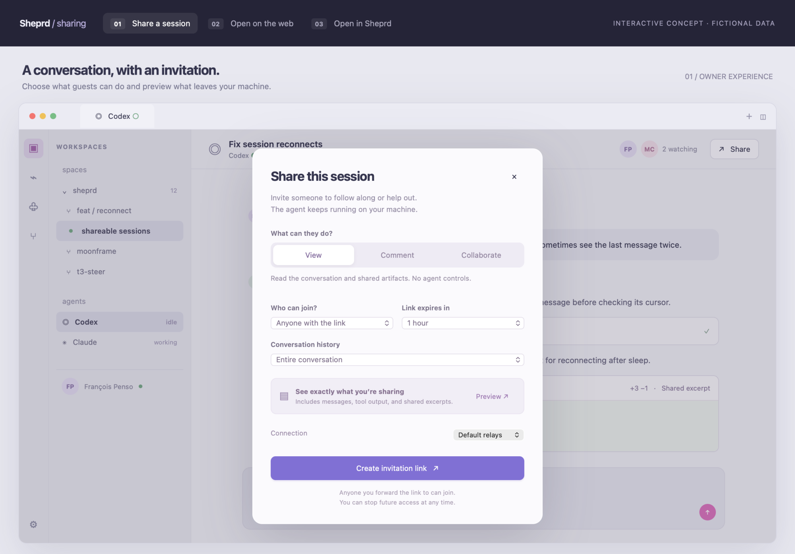
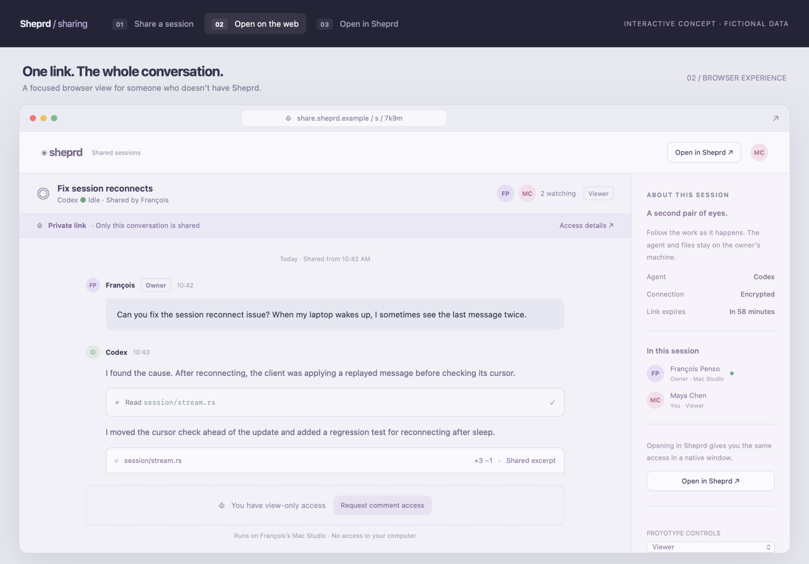
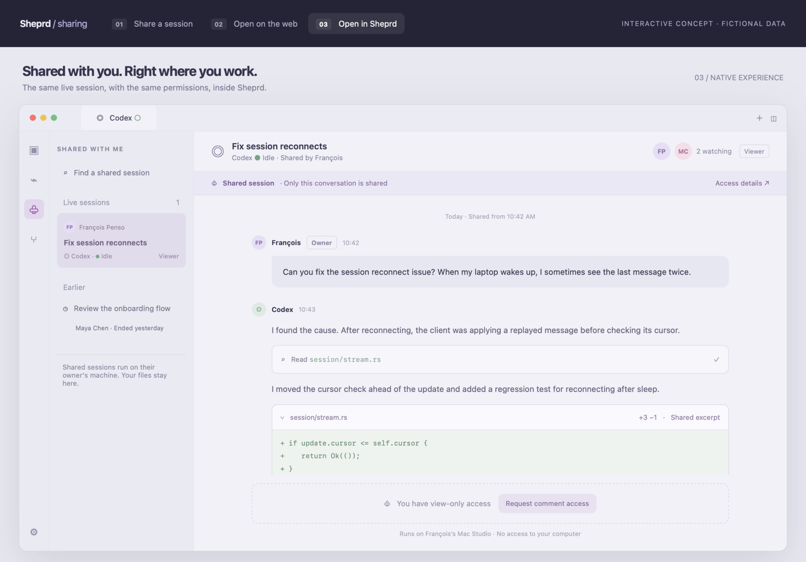

Choose an audience.
People, a team, or an expiring link. Preview exactly what guests receive.
Invite a person, a team, or someone with a link to follow a running agent. Open it on the web or in Sheprd. Keep control with the owner.
Use Annotate in Sheprd’s toolbar to pin a note to any decision or paragraph. Then choose Send to agent. The controls below can also prepare a review draft.
People, a team, or an expiring link. Preview exactly what guests receive.
A focused web viewer or a native shared session. No fleet enrollment.
Watch, comment, or suggest a prompt. The owner decides what reaches the agent.
Read-only browser and native sharing first. People and teams follow as a dedicated milestone.
Use an optional hosted identity and membership authority for named people and teams. Keep IDs issuer-qualified and the protocol open.
Current and future members can access active team shares. A fixed recipient list creates individual grants instead.
Offer View, Comment, and supervised Collaborate. Teams can receive View or Comment; individual collaborators suggest prompts.
Anonymous links start as view-only, expire after one hour, and share history from this point. Named and team shares are restricted.
Test a viewer served by the selected relay origin, with an encrypted application stream to the host. Preserve existing cross-origin protections.
No hosted transcript archive or automatic offline persistence. Live access requires the host to be online.
Content flows left to right; authorized proposals flow back. A separate identity authority supplies person and team proofs to the host. Relay access alone never grants session access.
Membership determines who may join. New team members gain access to active shares; removed members lose team-derived access within the proposed freshness budget. Other grants may remain.
Existing machine trust stays separate. Joining a shared session never grants terminal, filesystem, SSH, or fleet access.
They are never silently sent to the agent. Prompt suggestions need exact-text owner approval. The agent still uses its existing execution permissions.
It stops future access and pending guest proposals. It cannot retract received content, screenshots, or work already started by the agent.
Threat model, identity and recovery, browser crypto, relay origin, invitation format, and resource limits.
Persistent grants, filtered transcript, source identity, artifacts, expiry, and revocation.
Share dialog, exact guest preview, browser viewer, native Shared with me, and private-relay setup.
Identity, admission, membership lifecycle, effective access, discovery, device loss, and recovery.
Human comments, attributed prompt proposals, exact-text owner approval, and queue state.
Public draft, reference clients, conformance fixtures, operational docs, and independent security review.

01 · Sharing a session ↗
02 · Viewing on the web ↗
03 · Viewing in Sheprd ↗Illustrations, not a final security contract. D5 updates the default history choice; the team-management screens have not been designed yet.
Exact plan content, grouped for reading. Expand a section to annotate its details. Repository references are labelled text here; external sources remain links.
A session owner clicks Share, chooses people, a team, or a link audience, chooses permissions and an expiry, previews the guest-visible content, and creates an invitation. A recipient opens an HTTPS link in a browser or opens the same session in Sheprd under Shared with me. Compatible apps can implement the same session protocol without joining a Sheprd fleet.
The agent continues running on the owner's host and account. Sharing does not transfer its process, repository, credentials, billing, or ownership.
| ID | Recommendation | Tradeoff or alternative |
|---|---|---|
| D1 | Ship read-only links first; teams are a subsequent milestone in this plan. | A team-first launch delays the usable viewing feature until identity and membership exist. |
| D2 | Introduce an optional hosted identity/membership authority for named people and teams; keep the protocol issuer-qualified and self-hostable in design. | Distributed signed membership avoids a central authority but makes recovery and revocation substantially harder. Self-hosting support is not claimed until implemented and tested. |
| D3 | Team grants follow current membership, including future members. | A fixed audience is an explicit “Share with these people” action that creates individual grants. |
| D4 | Initially offer View, Comment, and supervised Collaborate; team grants stop at Comment. | Direct prompting is a separate future permission, not a hidden meaning of Edit. |
| D5 | Anonymous links default to View, one-hour expiry, and history from the sharing point. Named/team shares default to restricted access. | Sharing full history requires an explicit selection and preview. This changes the initial mockup's full-history default. |
| D6 | Prototype a same-origin browser viewer served by a share-capable relay, with an encrypted application stream to the host. | A centrally hosted viewer connecting to arbitrary private relays requires a different, explicitly secured cross-origin transport. |
| D7 | No hosted transcript archive or automatic offline persistence in the first release. | Live access needs the host online; frozen snapshots are a separate future publishing feature. |
D2 and D6 are architecture gates. Validate them in limited experiments only after plan approval, before committing to a public protocol or production service. Approval can select particular phases; it need not authorize the entire roadmap.
The dialog contains an access list, Add people or teams, link access, permissions, history scope, expiry, connection choice, and Preview as guest. Creating or broadening a grant requires a deliberate confirmation in this dialog.
Each access row names its source: “Maya · direct · Comment” or “Engineering · 8 members · View.” Team rows explain that current and future members gain access until expiry. The owner can inspect effective access for one person, including overlapping direct, team, and link grants.
Preview uses the exact host-side projection guests receive. It shows whether messages, tool output, images, and explicit artifacts are included. Warn about possible sensitive content without claiming automated scanning catches it all. Secrets, tokens, and local path access are never included as separate capabilities.
An always-available Sharing indicator shows participants, pending admissions, and active grants. Stop sharing revokes every grant for this share. Stopping sharing and stopping the agent are distinct actions. Neither undoes prior work.
The landing page exposes no session title, participant names, or transcript before admission. A plain GET and link preview crawler do not redeem an invite. A guest explicitly joins, then sees a readable transcript, tools, approved artifacts, presence, access level, expiry, and the owner/host attribution.
Show distinct states: waiting for approval, connecting, live, reconnecting, host offline, expired/revoked, session ended, and unsupported protocol. Previously received content cannot be remotely erased; offline UI marks it stale, disables actions, and does not imply continued authorization.
Open in Sheprd is user-initiated. It preserves the original grant without escalation or fleet pairing. Device-bound access is re-proven by the native client or reapproved, never converted into a broader reusable bearer token. Keep a browser fallback and a manual paste-invite flow for platforms without an installed-app association. No probing installed applications automatically.
Shared with me is distinct from local workspaces and fleet machines. Filter by Direct or a team. Rows show session title, owner, state, and effective access. A shared chat uses the existing native transcript presentation, with explicit remote ownership and capabilities. It exposes no terminal, host browser, filesystem, fleet, or other session navigation through the shared connection.
A local bookmark can restore the entry but must reauthorize before reconnecting. Browser and native clients have equivalent permissions. Implement and test both classic and Moonframe entry points; no platform silently gains a weaker policy.
A person has a stable identity independent of display name, email, or device. A team has an immutable issuer-qualified ID, a mutable name, and membership roles Owner, Admin, and Member. Initially no nested teams, domain auto-enrollment, or invitations that silently enroll everyone with an email domain.
Team invitations are expiring, explicitly accepted, and tied to the intended identity. Admins manage membership; only owners manage team ownership. Prevent removal of the last owner without an explicit transfer or team deletion flow. Team administration never grants session ownership or agent approval rights.
A new member gains access to active team-shared sessions, including whatever history those shares permit. Removal withdraws the team-derived grant. Direct or other-team grants can remain; explain them in the owner's access UI. An anonymous link cannot enforce an individual exclusion: revoke the link or use restricted sharing when that guarantee is required.
Leaving/deleting a team withdraws its access. Deleting and recreating a team with the same name does not restore old grants. Shared session discovery reveals only entries currently authorized, not every session running on team machines. Do not notify every teammate about every update; notifications and mentions are separate from access. In-app invitations first, no email delivery service assumed.
| Action | Viewer | Commenter | Supervised collaborator | Owner |
|---|---|---|---|---|
| Read permitted transcript/artifacts | Yes | Yes | Yes | Yes |
| Comment to participants | No | Yes | Yes | Yes |
| Suggest an agent prompt | No | No | Yes | Yes |
| Submit that prompt to the agent | No | No | Owner approves exact text | Yes |
| Approve tool calls or questions | No | No | No | Yes |
| Cancel a turn/background activity | No | No | No initially | Yes |
| Change model/mode/auto-accept | No | No | No | Yes |
| Manage grants or permissions | No | No | No | Yes |
| Read arbitrary host files or use fleet APIs | No | No | No | Existing owner access only |
Comments are a separate human conversation stream, never automatically inserted into agent context. Approved suggestions retain the authenticated author's identity and the approving owner's identity. Editing approved text creates a new proposal needing approval. Grant validity is checked again when executing a queued action; revocation removes pending guest proposals.
Approval authorizes a prompt, not every resulting tool action. The agent's existing execution permissions still apply. A Full Access/auto-accept agent may perform powerful actions after the owner approves a suggestion. Describe this honestly; supervised sharing is not a new execution sandbox.
Future direct control requires a separate review of execution boundaries, spending limits, cancellation, and one active guest driver. It is not included in the milestones below.
Existing code already provides projected transcripts, snapshots and deltas, epoch/sequence cursors, command acknowledgements, bounded queues, and local attach endpoints in sheprd-chat-protocol. sheprd-acp remains the agent's single ACP client. The remote-control daemon already attaches to chats and reaches hosts through relays. Its current paired-device trust is broader than a session grant and must not be inherited by a guest.
Agent -> existing chat attach endpoint -> host sharing gateway
|
authorized content projection
|
encrypted application connection
|
public or private opaque relay
|
browser / Sheprd / compatible client
Identity authority -> person/device and team membership proofs -> host gatewayThe host sharing gateway is a module of the existing remote-control daemon, not a new agent process or blanket proxy to its existing API. It has its own session-only dispatch and authorization context. A guest connection cannot fall through to the paired phone, shell, SSH, file, or fleet endpoints. Closing the desktop app leaves an already enabled host service and agent alone. If the service is absent, explain setup and obtain the user's normal explicit enablement; do not silently install it when rendering Share.
Proposed ownership of changes:
| Area | Responsibility |
|---|---|
sheprd-chat-protocol | Reuse transcript types/reducer where suitable; narrowly scoped shared-session wire/content types, no I/O or GPUI |
sheprd-remote-control | Host share records, authorization, filtered streams, membership refresh, bounded audit, session-only gateway |
sheprd-relay | Separate share transport admission and limits; opaque traffic, no people/team database |
sheprd-tunnel | Evaluate browser-compatible use of existing handshake and record code; shared vectors, no improvised cryptography |
sheprd-client | Native guest connection worker if no narrower existing owner fits; no UI-thread I/O |
sheprd-gpui, Moonframe UI | Share dialog, admission, people/teams views, shared-session list and native presentation |
sheprd-credentials | Local identity/device credentials through existing stores |
| Control protocol, CLI, managed skill | Commands and documentation added with each supported user action |
| Browser viewer assets | Dedicated bundle; reuse safe display concepts from existing web chat, never its broader authorization |
| Identity/membership authority | Separate deployment/trust boundary; exact implementation, dependency selection, and recovery design need D2 review |
Do not create a new crate preemptively. Before changing shared error/config registries or public wire types, refresh main and check concurrent work.
Use HTTPS/WSS. The invitation binds a protocol version, share ID, permitted relay endpoint(s), host public-key identity, expiry, and invitation proof. Exact encoding and signing rules are a phase-0 deliverable, not specified cryptography in this plan. Never expose raw attach sockets or existing fleet credentials.
Invitation secrets belong in the URL fragment, not request paths/query strings. Fragments are not sent in the initial HTTP request, but page JavaScript can read them. Strip the fragment from visible history after processing, prohibit analytics and third-party scripts, and scrub links from diagnostics. Link previews contain no private metadata. A stolen complete bearer link retains its intended authority.
Today's relay WebSocket routes deliberately reject cross-origin browser access. Do not weaken them globally. Proposed browser profile: serve the viewer on the chosen relay origin and use separate, bounded share endpoints. The viewer speaks an application protocol through the encrypted stream; it does not try to turn a tunnel into an arbitrary browser HTTP origin. Private relay operators must opt into this profile. Native clients can use supported relays without loading their UI.
Do not repurpose the current one-dial device pairing slot for multi-person sharing. Introduce share-scoped transport admissions with independent lifetimes, limits, and revocation; transport admission alone never authorizes session access. Public invite joins are rate-limited before host allocations. Bind the encrypted handshake to the intended host and share, with replay-resistant proof of access.
A relay can observe network metadata and disrupt access even when content is end-to-end encrypted. A browser additionally trusts the origin serving its JS: a malicious viewer deployment can steal invitation material and plaintext. Document this limitation; a private relay with a third-party viewer is not a fully self-hosted trust path. Native and independently hosted clients provide other choices. No claim that E2EE protects against malicious viewer code.
Proposed initial named/team identity: an optional authority with public-key sign-in (evaluate passkeys), explicit device enrollment, short-lived proofs, key rotation, and recovery. Keep authentication keys separate from transport keys. Browser credentials are origin-scoped; do not assume a passkey is a portable tunnel signing key. Specify the authenticated key-binding exchange.
Each host explicitly trusts an issuer for named grants. Person/team references include issuer identity so another provider cannot collide on an ID. The authority knows membership and authentication metadata, not transcript content or agent credentials. Compromise of an authority can falsify identities or membership within its trust domain; encryption alone does not prevent that.
Before production teams, document recovery, lost-device revocation, authority key rotation, backup/restore, owner succession, and issuer outage behavior. Recovery must revoke affected device sessions; a display-name/email change must not rebind old grants to a different person. This operational scope is why teams are their own milestone rather than a checkbox on link sharing.
Proposed freshness budget: membership proofs last at most five minutes. Connected hosts consume membership removals promptly, revoke derived connections, and reauthorize every action. During authority outages, access lasts only until the existing proof expires, then fails closed, including existing streams. No offline membership exception. Use a monotonic deadline locally and reject invalid clock conditions; bound the permitted wall-clock skew in the reviewed wire profile. Five minutes is a proposed maximum stale-membership exposure, not an instant revocation promise. Test and publish the actual bound before release.
Direct host revocation takes effect before any subsequent authorized dispatch, closes affected streams, invalidates artifacts, and persists across restart. Already delivered bytes and already-started agent work cannot be recalled.
A persistent share record contains an owner, stable source-session binding, grants, content policy, history boundary, expiry, and revocation generation. Grant IDs and public share IDs are unrelated to pane IDs or filesystem paths. Never attach a surviving share to a different agent that reuses a pane/socket. Session restart or epoch replacement revalidates the source identity; ambiguous replacement ends the share until the owner explicitly reshares.
Filter on the host before serialization. Give the shared projection its own IDs and cursor space so hidden entries are not required to reconstruct it. A reconnect snapshot obeys exactly the same history/content policy as live updates. “From this point” starts at an explicit share boundary: previous text, even if later mutated by a tool update, must not reappear. Design and test how in-flight entries are excluded or represented as fresh, sanitized placeholders. Policy changes reset the shared projection; previous disclosures remain disclosed.
Expose only named, bounded artifacts explicitly included by the owner. Artifact IDs resolve within the share, never to recipient-supplied host paths or URLs. Reject traversal, symlink escapes, unbounded decoding, and inherited local attachment paths. Initial version has no guest uploads. Treat transcript HTML, Markdown links, images, and tool output as untrusted; disallow script execution, automatic remote image fetches, and local file opening.
Defaults: no server archive, no service-worker transcript cache, no browser persistent transcript storage. Native clients keep bookmarks, not an automatic transcript archive. Downloads/screenshots are possible; make no copy-protection promise. Host audit records capture grants, admissions, identity, approvals, command IDs, and revocations without secrets or duplicate prompt bodies. Proposed audit retention is 30 days with a hard size cap and explicit pruning.
Choose hard limits in phase 0 for active shares, viewers per share, pending admissions, frame and artifact sizes, bandwidth, retained event windows, comments, and prompt proposals. Initial private-beta targets: 16 viewers/share, 8 active shares/host, 32 pending admissions/host. Benchmark before raising limits. Slow viewers disconnect and resume; no unbounded broadcast queue or UI-thread work.
Working name: Shared Agent Sessions, draft v0. No stable compatibility promise yet. Reuse established ACP content concepts where they fit; do not expose an agent's full ACP control surface as guest authority or require ACP internally.
The draft specifies invitation discovery, identity/admission, capability negotiation, filtered snapshots/deltas, cursors and reset, participant identity, comments/proposals, artifact access, errors, expiry/revocation, and resource limits. Unknown optional display events have safe fallback; unknown authorization semantics fail closed. Publish one mandatory interoperable security/transport profile rather than several incompatible optional choices.
Use host-assigned ordering and command deduplication scoped to authenticated actor, share, and command ID. An acknowledgement means accepted, not completed. Do not automatically replay pending prompts across reconnects. Guest claims cannot supply another participant's author ID or manufacture owner approval.
Team proofs are an optional capability; a view-only client can implement link sharing without managing teams. Fleet formats, UI layout, worktrees, and billing stay out of this protocol. Deliver schemas, Rust/browser reference behavior, malformed-input vectors, reconnect/revocation fixtures, and a conformance guide. Seek a second independent client (for example Superset) before declaring v1; contact or publish to another project only when separately authorized.
| Phase | Deliverable | Exit criteria |
|---|---|---|
| 0. Decisions and feasibility | Resolve D1–D7; threat model; invitation/identity sketches; browser crypto and same-origin relay experiments; limits | Reviewed transport/security profile; browser and native can establish the same bounded encrypted session; no fleet admission; identity/recovery scope understood |
| 1. Host policy and read protocol | Persistent grants, source binding, filtered snapshots/deltas, artifacts, expiry/revocation, read-only admission | Tests prove zero guest command authority and no excluded history in snapshots, reconnects, or artifacts; restart cannot resurrect revoked access |
| 2. Read-only product | Share/preview dialog, HTTPS viewer, native Shared with me, private-relay setup and failure states | Real end-to-end public/private relay flows; host offline/restart; expiry; native/browser parity; owner can stop all access; no account needed for a link viewer |
| 3. People and teams | Named identities, explicit admissions, team lifecycle, dynamic membership, effective-access UI, directory | Add/remove member during a stream; stale proof cutoff; overlapping grants; device loss/recovery; issuer rotation/outage; no unrelated session discovery |
| 4. Comments and supervised collaboration | Separate comments, attributed proposals, exact-text owner approval, queue state | Comments never reach agent automatically; unauthorized dispatch refused; approval/revocation races tested; no permission/mode/auto-accept controls exposed |
| 5. Interoperability and release | Public draft, reference client, conformance fixtures, operational docs and independent security review | Second-client exercise, adversarial validation, platform CI, redacted diagnostics, rollback procedure; version 1 only after compatibility review |
Each phase includes relevant CLI and native accessibility/localization work, not an end-of-project retrofit. Proposed commands: sheprd share list|show, share open, share invite, share revoke, team list|show, and team manage. Names are provisional. Read commands return bounded JSON; create/change/revoke and team mutations open the app's appropriate confirmation. Preserve --window, --json, exit codes, caller targeting, and secret redaction. Update docs/cli.md and the repository-managed browser skill when those commands actually exist.
First beta: opt-in feature, explicit host enablement, no discovery advertising. A kill switch disables admission and closes share streams without stopping agents or disturbing paired-device connections. Rollback must preserve durable revocations; unsupported share records fail closed. Relay and client version mismatch is explicit, not a fallback to plaintext or broader paired access.
Use unit tests of real authorization/projection reducers and end-to-end isolated host/relay/client processes. Do not substitute mock security checks for production paths. Local work uses relevant short checks; extended and cross-platform suites run in CI under the repository's verification policy.
Required scenarios include:
Before public release, obtain an independent review of admission, cryptography, identity recovery, content filtering, and browser supply-chain assumptions. Protocol interoperability does not replace that review.
Direct guest control, shared terminals, repository browsing, uploads, automatic agent consumption of comments, public searchable sessions, hosted archives, session forking, team-owned agents/credentials/billing, SSO/SCIM, nested teams, and cross-issuer federation are not part of the first implementation sequence. Self-hosted identity deployment and iOS native integration need explicit follow-up scope; the browser is the initial phone client. A future frozen export must have its own reviewed content boundary and retention policy.
Repository evidence:
External references consulted for the proposal, not implementation dependencies:
The earlier mockups illustrate the direction, not a final security contract. A review copy and mockup bundle are in the author's Downloads folder; no machine-local paths or screenshots are required to build from this document.
Your selections are a review draft. Nothing starts when you choose an option or prepare the draft. Send it back through Sheprd’s notes panel when you are ready.